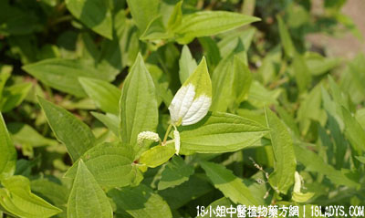

(本文解释权归中药材天地网兄弟站-18小姐中医植物药方网所有,如需转载请注明出处)

古籍名:三白草《唐本草》。
别名：田边藕。
植物名：三白草。
生长环境：本品为多年生草本，生于山谷、沟边、溪旁或地湿的地方。
分布：广东各地均有分布。
入药部分：根。
采集期：全年。
自采地点：湿润地。
性味：性寒冷、清热毒。
主治、用量和用法：1、小便刺痛：生用1至4两，清水煎后冲沙糖服；2、血淋，配伍用；3、花柳白浊：生用1至4两，加猪瘦肉同煎服；4、红肿热毒大疮：生用加片糖捣烂、外敷患处。
验方：（治红淋方）塘边藕1两，刘寄奴1两，扁柏1两，清水三碗半，煎成一碗服。
（方解）本方塘边藕退热散瘀，下达小肠，刘寄奴活血止痛，扁柏凉血又能止血，合为凉血散瘀，止血之剂，治热性血淋有效。
（方歌）热胀膀胱迫血流，塘边藕退热清阴，加入刘寄奴扁柏，散瘀止痛愈血淋。
参考资料：李时珍云：“三台草生田泽畔，八月生苗，高二、三尺，茎如蓼，叶如“章胚”及“青葙”，四月其颠三叶，面上三次变作白色，余叶仍毛不变，五月开花成穗，结细实。根长白虚软、有节须，状如“泥菖蒲”根。气味甘辛寒，有小毒。根疗脚气风毒胫肿，捣研酒服甚验。又煎汤洗疣疮。
《唐本草》主治水肿，脚气，利大小便；消炎、破癖，除积聚、消疗肿。
《藏器》捣绞汁服。令人吐逆。除疟及胸膈热痰，小儿痞满。
《中国药用植物图鉴》成份含有挥发油，油中主要成分为甲基正壬酮。
《本草推陈》南京民间草药名为白节藕；用治火淋，虚淋，黄疸。
《植物名实图考》湖南民间用作治筋骨痛及夫人调经。
《百花湾》配神仙对坐草治黄疸。
(本文解释权归中药材天地网兄弟站-18小姐中医植物药方网所有,如需转载请注明出处)